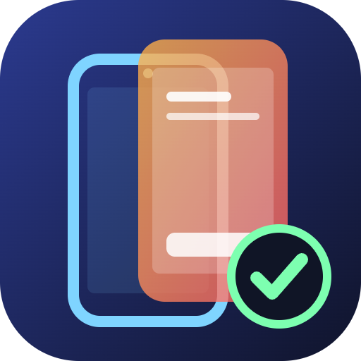

WordSkills Diff Screen
일치도
--%
투명도
50
%
F4: 사진↔에뮬레이터 전환
에뮬레이터 창
창 선택
맞추기
화면 영역 보정
사진 (.png 폴더)
폴더
사진 불러오기
←
-
→
옵션
자동 맞춤
클릭 통과
일치도 자동 갱신
사이드바 도킹
오른쪽
왼쪽
지금 갱신 (F5)
adb 지정
F4 전환 · F5 갱신 · F6 클릭 통과 · ←/→ 이전/다음 사진
Ctrl+Alt+방향키 1px(Shift 10px) · Ctrl+Alt+0 이동 초기화 · Ctrl+Alt+PgUp/PgDn 투명도
단축키는 이 창 또는 에뮬레이터 창이 앞에 있을 때만 동작합니다.